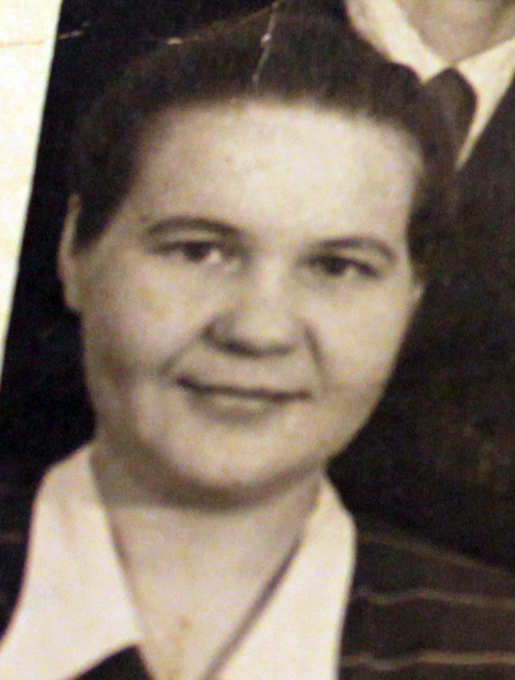

Продолжительность жизни: 54
Место жительства: г. Назарово
Основное занятие: Невропатолог ЦРБ
Муж: Саулевич Иван Васильевич (29.01.1930 - 11.02.2013)
Сын: Саулевич Валерий Иванович (05.04.1958)
Родилась: 28.08.1929.
Вышла замуж. Муж: Саулевич Иван Васильевич.
Родился сын: Саулевич Валерий Иванович, 05.04.1958. Отец: Саулевич Иван Васильевич.
Умерла: 09.09.1983.
. |